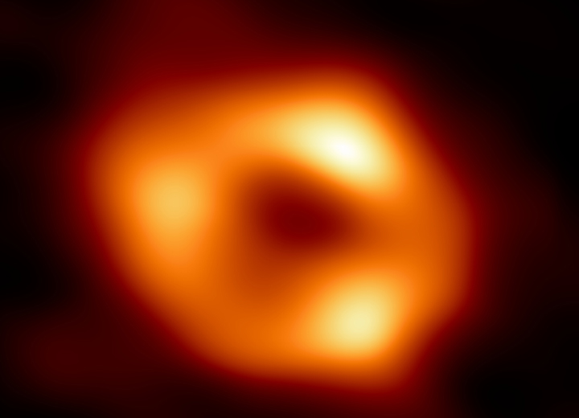
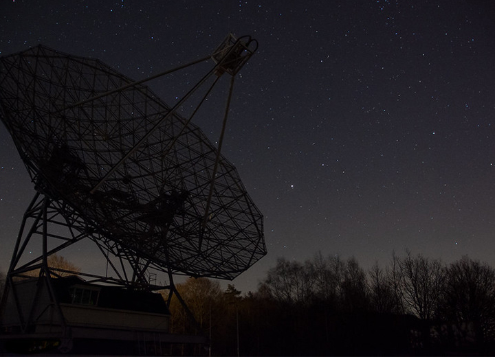
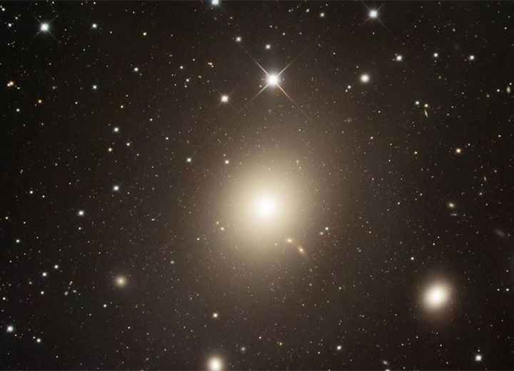
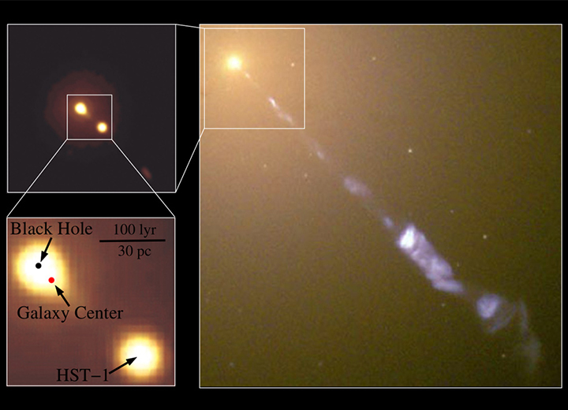
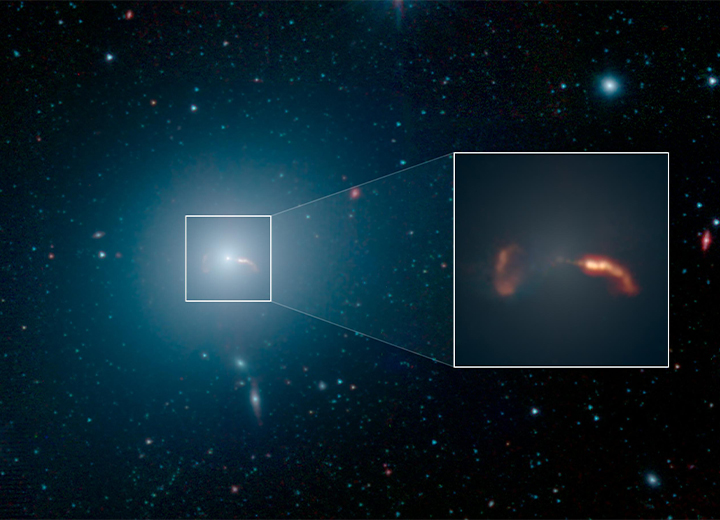

O Buraco Negro M87: um misterio cosmico revelado
Os buracos negros são objetos fascinantes e misteriosos no universo. Suas propriedades peculiares desafiam nossa compreensão atual da física e nos instigam a explorar os limites do conhecimento humano. Um dos buracos negros mais estudados e notáveis é o M87, localizado na galáxia Messier 87. Neste artigo, mergulharemos no fascinante mundo do buraco negro M87, desde sua descoberta até sua localização e relação com sua galáxia hospedeira.
Descoberta

A descoberta do buraco negro M87 remonta a décadas atrás, mas foi apenas em abril de 2019 que a humanidade teve sua primeira imagem direta de um buraco negro. O Projeto Event Horizon Telescope (EHT) foi o responsável por esse marco histórico. Utilizando uma rede de radiotelescópios em todo o mundo, os astrônomos conseguiram capturar a imagem do horizonte de eventos do buraco negro M87, revelando sua forma distinta e o anel brilhante de luz ao seu redor.
Localização

O buraco negro M87 está localizado na galáxia Messier 87, também conhecida como M87, na constelação de Virgem. Essa galáxia massiva é uma das maiores e mais brilhantes do Aglomerado de Virgem, situado a cerca de 55 milhões de anos-luz da Terra. Para se ter uma ideia da distância colossal, um ano-luz representa a distância percorrida pela luz em um ano, viajando a velocidade de 300.000 km/s.
Características do Buraco Negro M87

O buraco negro M87 tem uma massa estimada em cerca de 6,5 bilhões de vezes a massa do nosso sol. Essa imensa quantidade de massa comprimida em um volume extremamente pequeno resulta em uma gravidade inimaginável, capaz de distorcer o espaço-tempo ao seu redor. A massa e o poder de atração gravitacional do M87 são os principais responsáveis pela formação do jato de matéria relativística que emerge dele. Esse jato é um dos mais intensos já observados e se estende por milhares de anos-luz na galáxia.
A Galáxia Messier 87

A galáxia Messier 87, que abriga o buraco negro M87, é uma gigante elíptica situada no centro do Aglomerado de Virgem. Ela contém bilhões de estrelas e um grande número de aglomerados estelares. M87 é conhecida por sua emissão de rádio intensa e possui um núcleo galáctico ativo. O buraco negro supermassivo M87 desempenha um papel crucial na formação e evolução dessa galáxia.
Importância Científica
O estudo do buraco negro M87 tem implicações significativas para a astrofísica e a compreensão da evolução das galáxias. A imagem obtida pelo EHT forneceu evidências concretas para a existência dos buracos negros, confirmando as previsões teóricas de Albert Einstein. Além disso, o M87 é um laboratório natural para estudar a física extrema governada pela relatividade geral de Einstein e a interação entre buracos negros e a matéria ao seu redor.